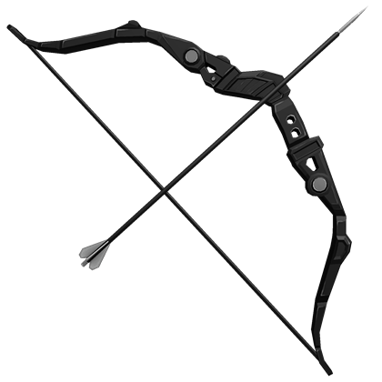

- The traditional bow can be traced back to 10,000 BC!!!
- The bow replaced spear-throwers as the predominant projectile launcher.
- A mounted archer was a deadly foe in battle.
- The bow was the primary means of hunting for thousands of years.
- It's true most bows were made out of wood and string. It's that simple!
- Archery is still popular for hunting, competitions, or as a hobby.
- I try to shoot my bow at least twice a week!
Let's start off with some fun facts:
